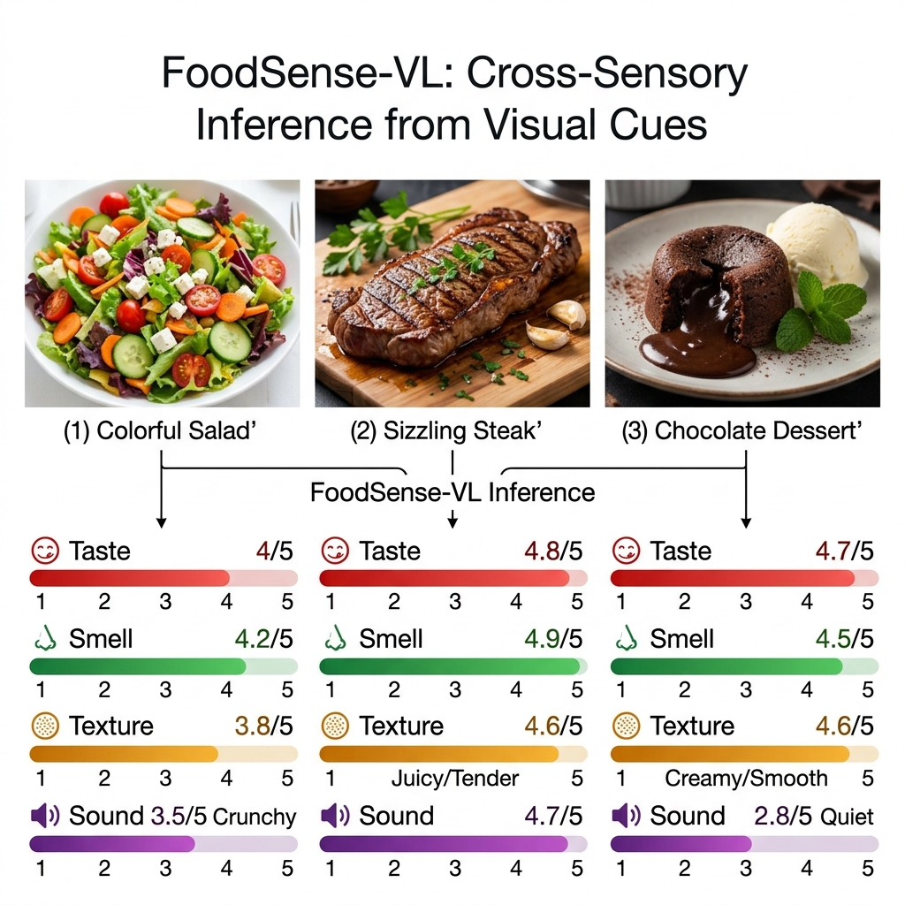
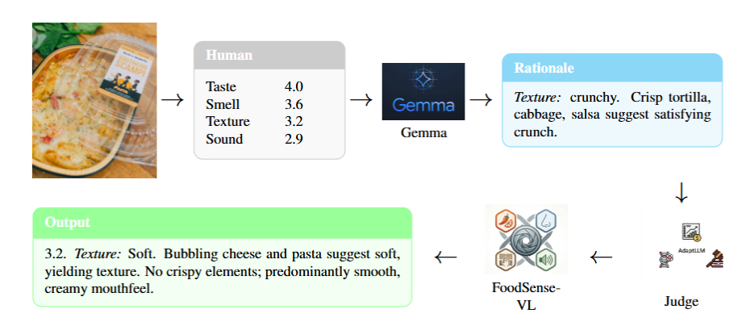

Predicting taste, smell, texture, and sound from food images. A 544K-image dataset, human-annotated benchmark, and two-stage vision-language model for multisensory food understanding.

Humans routinely infer non-visual sensory properties of food—imagining the crunch of a chip or the aroma of fresh bread—from visual appearance alone. We formalize this problem as cross-sensory inference from visual cues and introduce FoodSense, a large-scale dataset pairing 544,312 Yelp food images with crowd-sourced review text, and a human-annotated evaluation set of 438 images scored on four sensory dimensions: taste, smell, texture, and sound.
Building on this resource, we propose FoodSense-VL, a two-stage QLoRA fine-tuning pipeline applied to Gemma 3 27B that first learns from human sensory annotations, then expands using MAmmoTH-style synthetic targets. We benchmark FoodSense-VL against seven vision-language models and reveal that conventional MAE rankings can be misleading—a constant-mean baseline achieves the lowest MAE of all, underscoring the need for correlation-aware evaluation.
544,312 food images paired with Yelp review text, spanning diverse cuisines and restaurants. Includes a 438-image human-annotated evaluation set scored on four sensory dimensions.
Two-stage QLoRA fine-tuning of Gemma 3 27B-IT. Stage 1 learns from 438 human annotations; Stage 2 expands via MAmmoTH-style synthetic targets from 3,590 training images.
Nine models evaluated across seven metrics (MAE, CalMAE, Pearson, Spearman, CCC, Ordinal Accuracy, σpred) with human inter-rater agreement as ceiling.
We show that a constant-mean predictor achieves the lowest MAE (0.377), proving raw MAE alone rewards conservative hedging over genuine sensory discrimination.
FoodSense-VL builds on Gemma 3 27B-IT using a two-stage QLoRA strategy designed to combine the precision of human annotations with the coverage of synthetic data expansion.

Fine-tunes Gemma 3 on 438 human-annotated images using 4-bit QLoRA. Each training example pairs a food image with ground-truth ratings (1–5 scale) and descriptive rationales for taste, smell, texture, and sound. This stage teaches the model to ground sensory language in visual features.
Extends training to 3,590 images using synthetic targets generated by the Stage-1 model in a MAmmoTH-style self-expansion pipeline. This improves correlation metrics (Pearson +0.04, Spearman +0.03) at the cost of higher MAE, primarily driven by the sound dimension.
Stage 1 achieves the best overall MAE by learning calibrated predictions from human labels. Stage 2 sacrifices some MAE to gain higher correlation and prediction diversity (σpred rises from 0.491 to 0.591), meaning the model better distinguishes between different food items rather than hedging toward the mean.
All models evaluated on 438 human-annotated test images across four sensory dimensions. Human inter-rater LOO MAE = 0.793 provides the agreement ceiling. Sorted by Pearson r to reflect true discrimination ability.
| Model | Type | MAE ↓ | Cal. MAE ↓ | Pearson r ↑ | Spearman ρ ↑ | Lin's CCC ↑ | σpred | Ord. Acc. ↑ |
|---|
Pearson r measures linear correlation between predictions and human ground truth—higher is better. Lin's CCC combines correlation with calibration agreement. σpred measures prediction diversity; ~0 means the model outputs nearly constant values. Human annotators disagree by LOO MAE = 0.793, so any model MAE near or below that is approaching the noise floor.
The largest food image collection purpose-built for multisensory prediction, sourced from Yelp and annotated by crowd workers.
Inter-annotator pairwise MAE = 1.039; leave-one-out vs. mean MAE = 0.793. Sensory perception is inherently subjective—even humans disagree by nearly 1 point on a 5-point scale. This context is essential when interpreting model errors.
Full training, inference, and evaluation pipeline. SBATCH scripts for SLURM-based HPC clusters.
QLoRA adapters for both Stage-1 and Stage-2 checkpoints. Base model: Gemma 3 27B-IT.
All predictions (JSONL) and evaluation metrics (CSV/JSON) for 9 models across 5 senses.
We believe in transparent reporting. Here are the known limitations of our work.
Stage-2 MAmmoTH expansion degrades Sound MAE from 0.517 to 0.889. The synthetic expansion appears to overfit the sound dimension, which has the least visual signal.
All images come from Yelp, heavily skewing toward North American restaurant food. Performance on non-Western cuisines, home-cooked meals, or raw ingredients is untested.
Sensory perception is culturally influenced. Our annotator pool may not represent the global diversity of food perception norms.
438 human-annotated test images provides moderate statistical power. Confidence intervals on some per-sense metrics may be wide.
The best Pearson r achieved is 0.297 (overall). While above zero-shot baselines, this indicates substantial room for improvement in cross-sensory prediction.
Sensory ratings cluster near the center of the 1–5 scale, creating a distribution where mean-prediction strategies are deceptively competitive on MAE.
@inproceedings{ishraq2026foodsense,
title = {FoodSense: A Multisensory Food Dataset and Benchmark for
Predicting Taste, Smell, Texture, and Sound from Images},
author = {Ishraq, Sabab and Aarushi, Aarushi and
Jiang, Juncai and Chen, Chen},
booktitle = {Proceedings of the IEEE/CVF Conference on Computer
Vision and Pattern Recognition (CVPR)},
year = {2026}
}